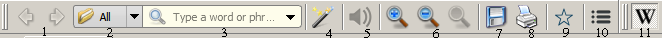

GoldenDict toolbar can contain next elements:

Elements 2 and 3 are presents in toolbar if search pane is disabled in "View" menu. Otherwise group list, search line and matches list combined in separate pane in main GoldenDict window.
Search line 3 contains word which will be searched in current dictionaries group. The translation will be shown by pressing the "Enter" key or by choose variant from matches list. If Ctrl or Shift key has been pressed the new tab for translation will be created.
The search line can contain wildcard symbols '?' (matches any one character), '*' (matches any characters number) or ranges of characters "[...]". To find characters '?', '*', '[' and ']' it should be escaped by backslash - '\?', '\*', '\[', '\]'.
Note: The wildcard symbol at first position in word leads to full headwords list scanning and it may take a long time for huge dictionaries.
The button 4 is presented in toolbar if the popup window is enabled in preferences.
The button 9 add current tab to Favorites.
The button 10 is presented in toolbar if the main menu is turned off via "View" menu.
The dictionaries bar 11 contains icons (and names optionally) of all dictionaries from current dictionaries group. You can turn on/off search in these dictionaries by mouse click on dictionary icons. If button with icon is in pressed state a corresponding dictionary is included in search, otherwise one is excluded. If you click dictionary icon with Ctrl of Shift key pressed the all other dictionaries will be disabled. The next click on this icon with Shift key pressed restore the previous dictionaries bar state, click with Ctrl key pressed enable all dictionaries.
Note 1: If dictionaries bar is disabled such dictionaries enabling/disabling is not available.
Note 2: Mouse click on dictionary name in the "Found in Dictionaries" pane with Alt key pressed is equal to simple mouse click on dictionary icon in the dictionaries bar. Same click with Ctrl of Shift key pressed is equal to click on dictionary icon in the dictionaries bar with same key pressed.